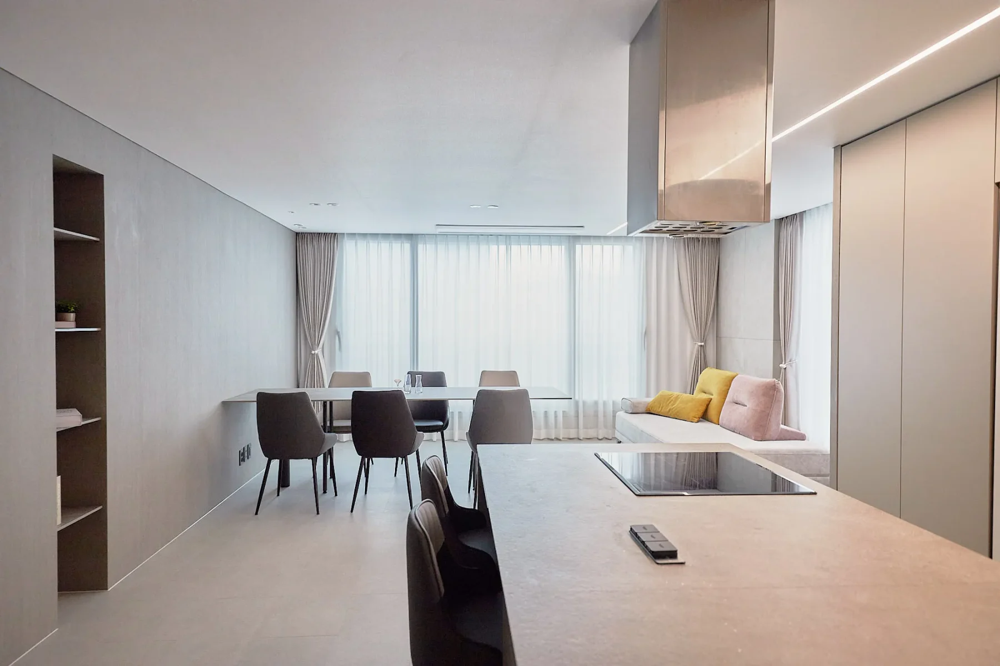
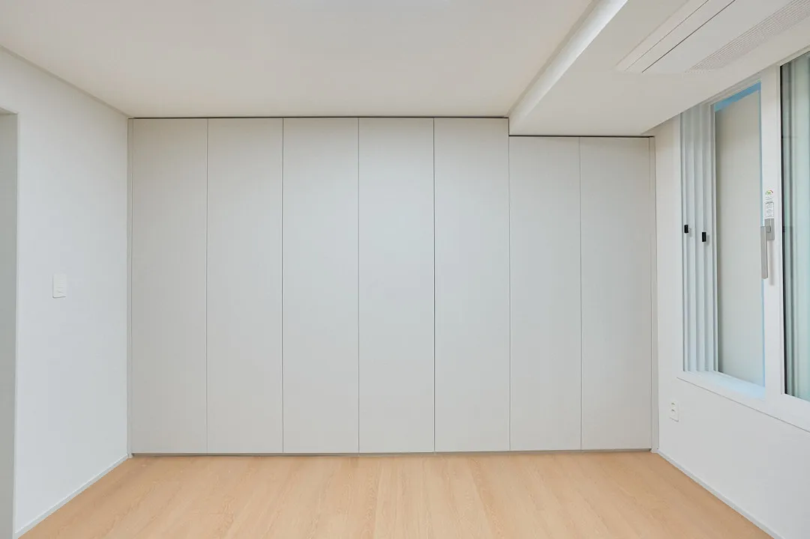
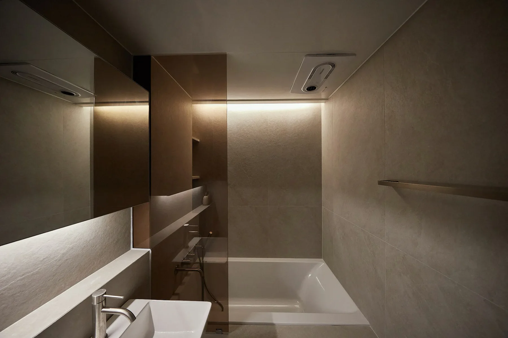
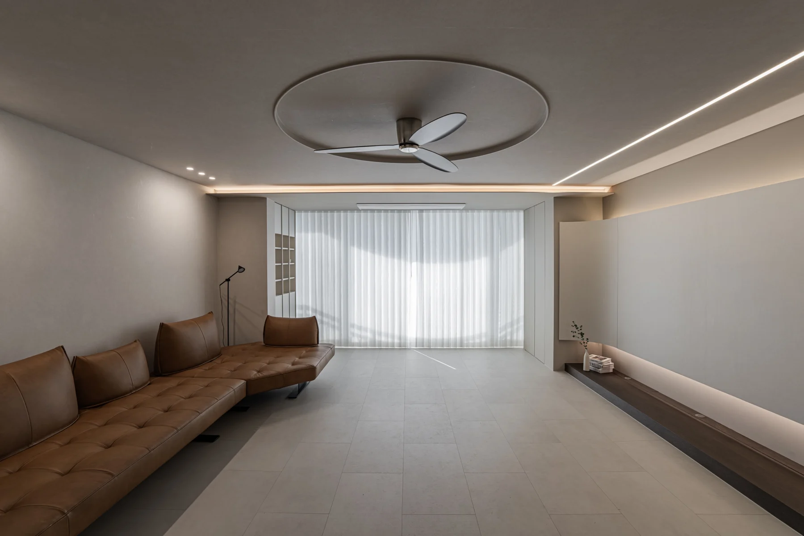

욕실 두 곳을 고칠까,
마루를 바꿀까?
기존 욕실을 계속 사용할 수 있고 바닥의 색과 상태가 가장 큰 불편이라면, 욕실 한 곳을 유지하고 마루에 예산을 배분하는 안을 먼저 비교해 보세요. 누수나 기능 문제가 있는 욕실은 상태 확인과 필요한 보수를 먼저 계획해야 합니다.

사진은 글의 이해를 돕는 공간보감의 별도 시공 사례입니다. 현장명을 누르면 해당 포트폴리오를 볼 수 있습니다.
리모델링 예산이 정해져 있어도 바꾸고 싶은 곳은 쉽게 줄어들지 않습니다. 주방은 넓게 쓰고 싶고, 욕실은 새로 정리하고 싶고, 조명과 마루도 마음에 걸립니다. 이때 필요한 것은 항목마다 조금씩 예산을 나누는 일보다, 생활에서 가장 크게 달라져야 할 부분을 먼저 찾는 일입니다.
욕실 두 곳을 모두 손보는 안과 욕실 한 곳을 유지하면서 마루를 교체하는 안은 서로 다른 결과를 만듭니다. 무엇을 남길 수 있는지, 남긴 부분이 새 공간과 어떻게 어울리는지를 함께 보아야 선택이 선명해집니다.
마루를 유지하면 무엇이 달라질까요?
기존 마루를 유지하는 계획에서는 그 바닥색이 벽지와 문, 주방 가구를 고르는 기준이 됩니다. 새 가구만 마음에 드는 우드톤으로 골라도 기존 바닥과 색의 방향이 다르면 전체 공간이 따로 보일 수 있습니다.

바닥의 상태와 색이 괜찮다면 유지하면서 다른 마감을 맞추는 안을 검토할 수 있습니다. 반대로 바닥색 자체가 가장 큰 불편이라면, 마루를 남긴 채 다른 마감만 바꾼 모습으로 그 불편이 해결될지 먼저 살펴보세요. 자재 샘플을 기존 바닥과 나란히 놓고 비교하면 판단에 도움이 됩니다.
욕실 한 곳을 유지하는 안은 언제 비교할까요?
욕실의 문제를 기능과 취향으로 나누어 보세요. 누수나 배수처럼 사용에 영향을 주는 문제인지, 타일색과 분위기를 바꾸고 싶은 것인지에 따라 공사 우선순위가 달라집니다. 유지 여부는 현장 상태를 확인한 뒤 정해야 합니다.

사용에 문제가 없는 욕실이라면 한 곳을 유지하고, 거실·주방의 마루와 자주 쓰는 욕실에 예산을 모으는 안을 비교해 볼 수 있습니다. 욕실 두 곳을 모두 고쳐야 생활이 편해지는 집이라면 두 곳을 포함한 계획을 기준으로 다른 항목을 조정하는 편이 맞습니다.
비교할 질문은 하나입니다.
욕실 한 곳을 남겼을 때의 불편과, 기존 마루를 남겼을 때의 불편 중 어느 쪽을 매일 더 크게 느낄까요?
| 비교안 | 얻는 변화 | 먼저 확인할 조건 |
|---|---|---|
| 욕실 두 곳 정비 기존 마루 유지 | 두 욕실의 사용성과 마감을 함께 정리 | 기존 마루의 상태·색을 받아들일 수 있는지, 새 벽지·가구와 어울리는지 |
| 욕실 한 곳 정비 공용부 마루 교체 | 거실·주방의 바닥과 전체 색감을 함께 변경 | 남기는 욕실의 기능·상태, 마루 철거·시공 범위와 방 경계 마감 |
| 욕실 두 곳 정비 마루도 교체 | 욕실과 바닥의 변화를 모두 계획 | 전체 예산에 들어오는지, 다른 항목을 줄일 때 어떤 불편이 남는지 |
이 표는 비교를 시작하기 위한 틀입니다. 세 안의 공사 범위와 자재 조건을 적은 견적을 받아야 비용 차이를 판단할 수 있습니다. 욕실 타일 규격만 낮추는 안과 욕실 한 곳을 공사에서 제외하는 안도 각각 계산해 보세요.
조명만 바꾸려는데 왜 목공 이야기가 나올까요?
조명 계획은 등기구 가격만으로 끝나지 않을 수 있습니다. 매립등이나 간접조명을 계획하면 천장 형태, 목공 범위, 배선과 스위치 위치를 함께 검토해야 합니다. 조명 디자인을 바꾸면서 다른 공정도 달라지는지 확인하는 것이 필요합니다.

예산이 빠듯하다면 원하는 조명을 먼저 정한 뒤, 그 조명을 구현하는 데 필요한 공정을 묶어서 비교해 보세요. 견적서에서도 등기구, 전기, 천장 목공, 마감의 포함 범위를 함께 확인하면 선택한 디자인에 어느 비용이 연결되는지 이해하기 쉽습니다.
입주한 뒤 바꾸기 어려운 부분은 무엇일까요?
마루는 생활 공간과 가구 배치에 넓게 걸쳐 있는 공사입니다. 입주 후에 바꾸려면 어느 공간을 비워야 하고 생활을 어떻게 이어갈지도 다시 계획해야 합니다. 욕실을 나중에 고치는 안 역시 사용 가능한 다른 욕실과 공사 중 생활 불편을 함께 검토해야 합니다.
지금 미루는 비용뿐 아니라 나중에 공사할 때의 부담도 선택에 넣어 보세요. 다만 누수나 기능 문제가 의심되는 부분을 미루는 판단은 별도 상태 확인 없이 하지 않는 편이 좋습니다.
상담 전에 어떤 내용을 정리하면 좋을까요?
- 가장 바꾸고 싶은 불편 하나. 바닥색, 주방 동선, 욕실 사용처럼 생활의 문제로 적습니다.
- 계속 사용할 수 있는 부분. 유지 후보는 현재 사진과 상태를 함께 준비합니다.
- 두 가지 비교안. 욕실 두 곳을 고치는 안과 욕실 한 곳·마루를 고치는 안처럼 범위를 나눕니다.
- 전체 지출의 범위. 부가세와 별도 업체에 지급할 에어컨·중문 등의 비용도 포함 여부를 확인합니다.
- 함께 결정할 기준. 가족이 각자 중요하게 생각하는 공간을 미리 적고 상담에서 비교합니다.
예산 안에서 만족도를 높이려면 남길 부분까지 포함한 완성 모습을 그려 보아야 합니다. 공간보감 상담에서는 가장 불편한 부분과 유지하고 싶은 부분을 알려주세요. 두 가지 공사안을 놓고 어떤 변화가 생활에 더 필요한지부터 함께 살펴볼 수 있습니다.
우리 집 공사 범위 상담하기